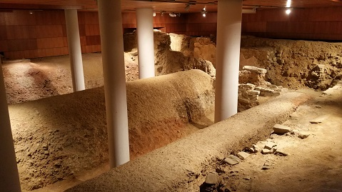
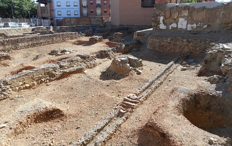
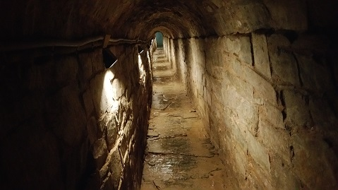

|
ASTÚRICA AUGUSTA ASTORGA |
|||||||||||||||||
Su fundación tiene origen con el
campamento levantado en la campaña de las Guerras Cántabras 29-19 a.e.c.
El asentamiento en la región tuvo lugar en dos fases: la primera hacia el
año 26 a.e.c, destinado a la incorporación del mons medullium
identificado con la zona del Bierzo; y un segundo asentamiento tuvo lugar
en otro punto hoy identificado con la actual ciudad de Astorga. Las Termas Menores se construyeron hacia el año 75 y dejaron de funcionar a mediados del siglo III. Su abandono esta ligado con la construcción de la muralla tardorromana en el siglo III. Están situadas en al sudoeste de la ciudad, junto al borde del cerro, en el sótano de un edificio. Las termas se han hallado en buen estado, permitiendo la localización e interpretación de sus estancias. Se conservan los muros que cerraban el edificio hacia el escarpe del cerro, y uno de los canales de desagüe cerrado por tegulae plana en forma de dos vertientes, especialmente importante por la aparición en él de diversas joyas que indicaron el uso restringido a grupos sociales elevados. Hacia el interior, se localizan las salas de baño y el horno conservado.
Se han descubierto dos fosos paralelos, el Foso Campamental, fossae fastigatae, de sección en “v” situados en el borde noroccidental del yacimiento. Vestigio del sistema defensivo de un campamento militar romano cuya fundación se remonta a las Guerras Cántabras. Hacia el primer tercio del siglo I, el foso interior se inutilizó y se inició la construcción de una muralla. Esta muralla que protegería la ciudad contó inicialmente con torres circulares, una de las cuales se cimentó en el foso. También fue invadido por los primeros edificios de la urbe y las redes de calles. En época Flavia, esta primera fortificación fue abandonada y la ciudad extendió su superficie protegida por otra muralla de piedra.
 El Foro se localiza en el mismo espacio que hoy ocupa la Plaza Mayor. Sus dimensiones, aún por confirmar, unos 30.000m2 eran monumentales extendiéndose desde los límites norte y oeste de la actual plaza. El foro se hallaba delimitado por un pórtico monumental jalonado a intervalos por exadras semicirculares y cuadrangulares. Su construcción ha datado en la época Julio-Claudia, realizándose en su totalidad con opus caementicium. Las calles tenían una anchura de 4 a 7 metros. Se hallaban pavimentadas con losas cuarcititas como se aprecian en el kardus maximus. Las calles estaban porticadas, protegiendo a los viandantes y jalonando las tabernae a ambos lados.

La Puerta Romana daba acceso a la ciudad
y estaba flanqueada por dos torres realizadas con sillares de granito de unos
ocho metros de diámetro entre las cuales se han hallado restos de varias
calzadas superpuestas. La primera muralla tenia unos dos metros de ancha y
cubos circulares situados a intervalos. Los restos de muralla que se
conservan actualmente pertenecen a la muralla tardorromana datada a
mediados del siglo III. El Recinto Amurallado, tiene forma trapezoidal y conserva
27 cubos circulares distribuidos a intervalos de 15 metros.
La Ergástula es un criptopórtico en muy buen estado de conservación, se edificó en el límite oriental del foro, posiblemente de época julio-claudia. Construido con opus caementicium. En la parte superior de los muros presenta un resalte, coincidiendo con la línea de imposta, donde se apoyaría la cimbra de madera empleada en la construcción de la bóveda de medio punto.
Otras Domus son: La Domus del Gran Peristilo; llamada así por su gran peristilo de unos 250m2. Tiene forma rectangular y ocupa toda una manzana unos 2.500m2. Se halla junto al decumanus maximus. Se ha datado a finales del siglo I. La Domus del Pavimento de Opus Signum, se halla en el lado noroccidental del foro. Se ha datado en el siglo I. Se denomina así por el único pavimento de estas características hallado en Astorga. La Domus de los Denarios se ha fechado en el siglo I y estuvo en uso hasta el siglo V. En sus sedimentos se hallaron 28 denarios de Augusto, Tiberio y uno de Marco Antonio.
Las Cloacas por donde discurrían las
aguas residuales eran conducidas a través de estas hacia los ríos Jerga y Tuerto. Inicialmente se construyó una
pequeña, adintelada y con capacidad limitada, pero debido al crecimiento
de la ciudad en la segunda mitad del siglo I, fue necesario desarrollar
una segunda de mayor caudal de un metro sesenta de altura media, y
un ancho próximo al metro, como el tramo localizado en el jardín de la
Sinagoga. Ambas redes permanecieron paralelas e incluso se aprovecharon
las canalizaciones secundarias que las comunicaban con las viviendas. Ver: Video
 En mayo de 2016, en el número 8 de la calle San José de Mayo, una excavación arqueológica previa a la construcción de un inmueble ha revelado unos espléndidos mosaicos romanos y una estatua fragmentada de un fauno. Los vestigios hallados en el solar forman parte de la denominada Domus del Pavimento de Opus Signinum, que se comenzó a excavar e n los años noventa. Más info:http://www.asturica.com/
|